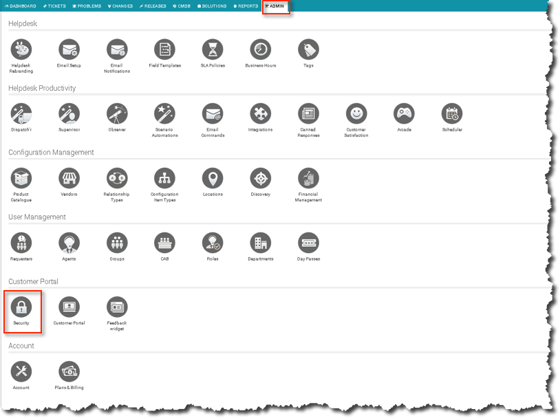
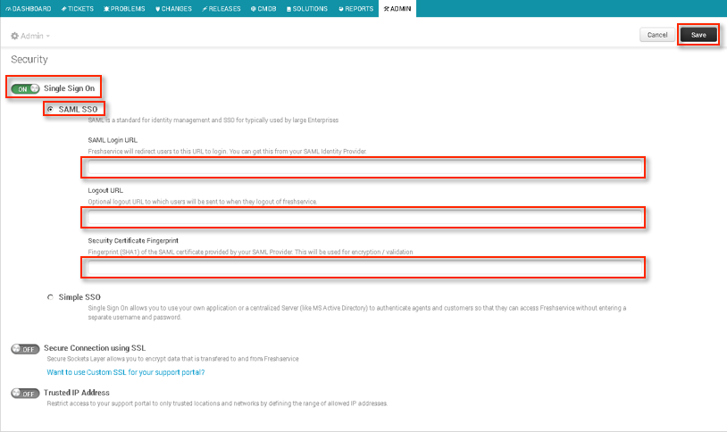

This setup might fail without parameter values that are customized for your organization. Please use the Okta Administrator Dashboard to add an application and view the values that are specific for your organization.
Sign in to Freshservice as an administrator.
Select the Admin tab, and then select the Security icon, as shown below.

Move the Single Sign On (SSO) slider to the ON position, as shown below.

Select SAML SSO, as shown above.
Copy and paste the following SAML Login URL, as shown above.
Sign in to the Okta Admin app to generate this variable
Copy and paste the following Logout URL, as shown above.
Sign in to the Okta Admin app to generate this variable
Copy and paste the following Security Certificate Fingerprint, as shown above.
Sign in to the Okta Admin app to generate this variable